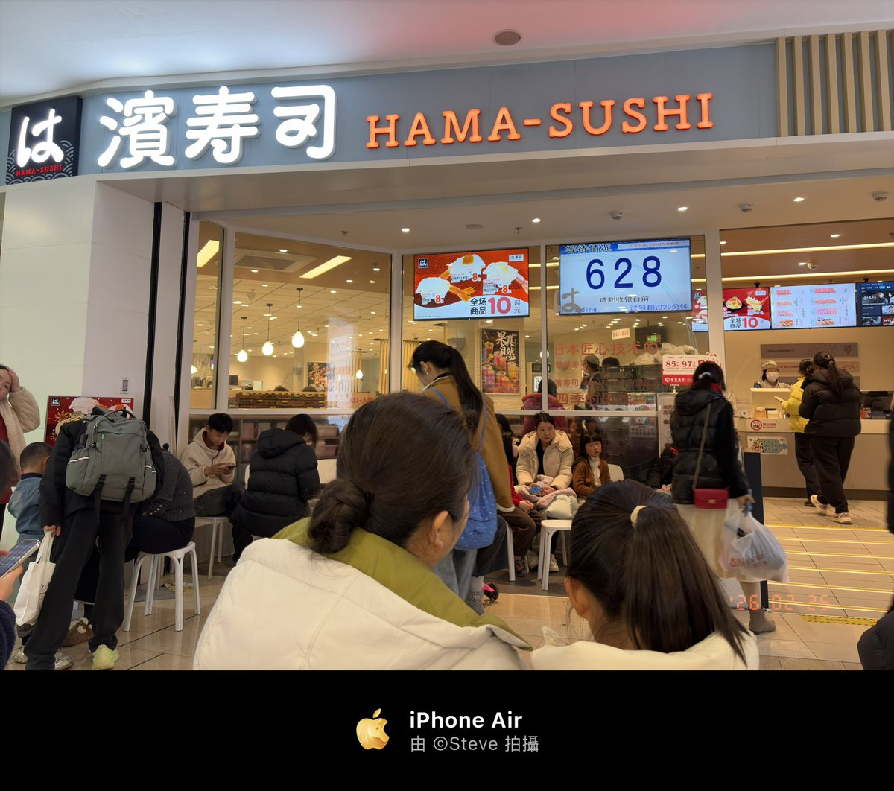

奶昔🥤
@realNyarime
@st7evechou 不想点饮料、薯条和鸡块，可以点“儿童套餐”，还会送你一个扭蛋币～

𝗦𝘁𝗲𝘃𝗲 𝕏
@st7evechou
今天打卡了排行榜第一的滨寿司。按照落座后的 iPad 进行点单，它会通过传送带传到你面前，相当于是现点现做的，从性价比来说，还是不错的。唯一的缺点就是排队了，因为我是饭点前去的，大概排了 15 分钟到 20 https://t.co/6HdD4Or9Jj